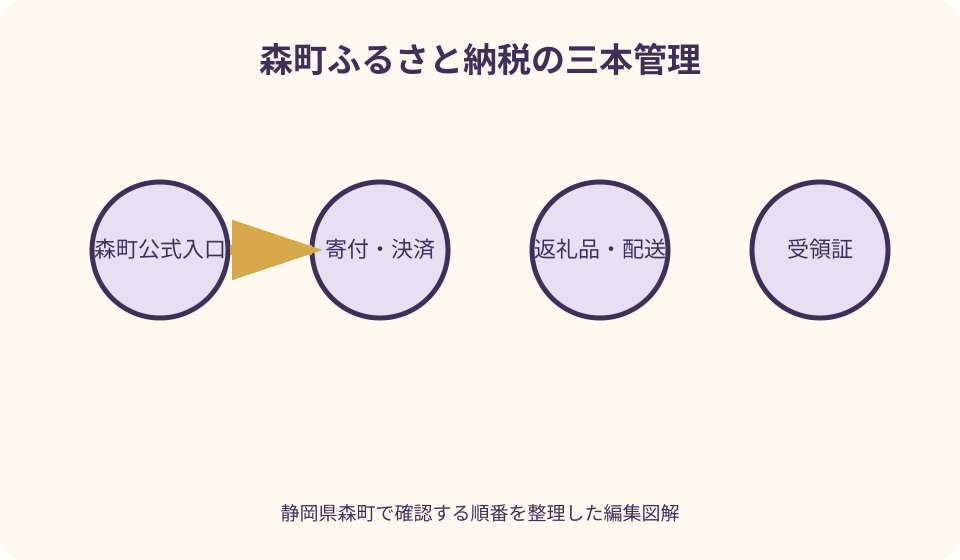
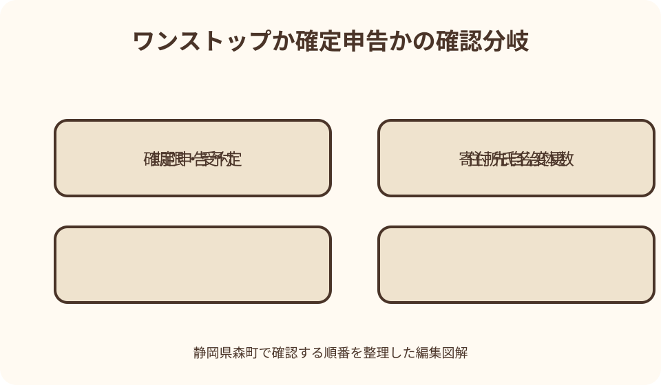

ふるさと納税｜最終確認 2026-08-10
静岡県森町のふるさと納税｜返礼品・ワンストップ特例・寄付後の確認手順
森町へのふるさと納税は、返礼品を通販のように買う手続ではなく、自治体への寄付と、希望する場合の返礼品、税の控除手続が組み合わさったものです。森町公式は複数の申込ポータルを案内し、返礼品を無断掲載する偽サイトにも注意を呼びかけています。同じ寄付でも、返礼品の在庫・配送と、寄付金受領証明書・ワンストップ特例・確定申告は別に追跡します。年末に慌てないよう、申込前、決済直後、書類到着、翌年の税確認までを一つの台帳で管理する方法をまとめます。

編集イラスト寄付・返礼品・税手続を三本に分ける
一本目は森町への寄付です。申込者、寄付日、金額、決済、使い道、受付番号を記録し、決済完了画面と確認メールを保存します。
二本目は返礼品です。品名、数量、発送予定、配送先、温度帯、不在時、提供事業者への連絡方法を保存し、寄付の受付と発送を同じ状態だと思いません。
三本目は税の控除手続です。寄付金受領証明書、ワンストップ特例申請、変更届、確定申告のどれが必要かを寄付者単位で管理します。
家族がそれぞれ寄付する場合は、決済者、寄付者名義、税の申告者を混ぜません。控除を受ける人の個別条件は税務署や税理士へ確認します。
森町公式ページを唯一の出発点にする
検索広告やSNSのリンクから直接決済せず、まず森町公式ドメインの『森町ふるさと納税』を開きます。更新日と掲載ポータル一覧を確認します。
公式ページから選んだポータルへ移動後も、ブラウザのアドレス、自治体表記、決済会社、問い合わせ先を見ます。似た名称や画像だけを信用しません。
ブックマークは検索結果ではなく森町公式ページへ付けます。翌年や二回目の寄付でも、前年に使ったURLが現在も公式掲載されているか確認します。
郵便振替や現金などポータル外の申込方法を希望する場合も、町公式の申込書と案内から始めます。第三者から届いた振込先へ送金しません。
偽サイトは割引表示と導線の不自然さで止まる
森町公式は返礼品を無断掲載する悪質サイトを確認したと注意喚起しています。寄付額の割引、値下げ、過度な緊急表示があれば手続を止めます。
返礼品の写真、森町名、提供者名が本物でも、そのページで寄付できる根拠にはなりません。森町公式の掲載リンクから同じ品を探し直します。
URLの文字違い、連絡先が個人メール、支払先が不自然、規約や運営者表示がない場合は、個人情報やカード番号を入力せず閉じます。
誤って情報や金銭を渡した疑いがあれば、森町公式に載る連絡先、決済会社、カード会社、警察などへ相談します。偽ページ内の連絡先だけを使いません。

良い点
森町公式ページは現在受け付けるポータル、郵便振替等の方法、寄付の使い道、偽サイト注意を一つの入口から確認できる構成です。
ワンストップ特例は別の町公式ページに、対象の考え方、オンラインと郵送、送付先、変更届、問い合わせ先が整理されています。
返礼品を選ぶ前に使い道を読み、森町を応援する目的を決めれば、品の在庫が変わっても寄付そのものの判断軸を保てます。
国税庁の寄附金控除資料と森町の申請案内を分けて読むことで、自治体への提出と税務署への申告を取り違えにくくなります。
返礼品は申込日の表示を保存する
返礼品ページでは、寄付額、内容量、発送予定、申込期限、配送地域、温度帯、消費・賞味の表示、アレルギー、提供事業者を確認します。
季節の農産物は収穫、生育、天候で出荷時期や数量が変わる可能性があります。掲載写真の見た目、サイズ、到着日を固定の約束と解釈しません。
体験、宿泊、利用券は有効期間、予約方法、除外日、現地までの交通、キャンセル、転売禁止などを申込前に読みます。寄付後に都合が合うとは限りません。
申込完了時のページ、規約、確認メールをPDFや画面保存で残します。後日表示が変わったとき、問い合わせに必要な受付番号と条件を示せます。
在庫・受付・配送を同じ完了にしない
ポータルで申込ボタンが押せても、決済、自治体受付、返礼品手配、発送は別の状態です。各メールの件名と送信元を台帳へ記録します。
数量限定、期間限定、先行受付、予約発送の意味は返礼品ごとに確認します。毎年同じ時期に同じ品が受付される保証はありません。
返礼品が受付終了でも、森町への寄付方法自体が終了したとは限りません。代替品の有無を勝手に推測せず、公式一覧へ戻ります。
災害や生育不良等で内容変更の連絡が来た場合は、受付番号と公式問い合わせ先を照合します。メール内リンクへすぐ個人情報を再入力しません。

配送先は寄付者住所と別に管理する
寄付者の住所、住民票上の住所、返礼品の配送先、ワンストップ書類の送付先は同じとは限りません。入力欄ごとに誰の情報か確かめます。
贈答先へ送る場合、送り主表示、金額の分かる書類、のし、日時指定が可能かを返礼品ページで確認します。通販と同じ対応を期待しません。
冷蔵・冷凍品は長期不在、宅配ボックス不可、再配達期限を考えます。発送前連絡の有無を見て、受け取れない期間があれば申込を避けます。
転居予定がある人は、返礼品配送先と税書類の住所変更を別々に連絡します。ポータルの会員住所を直せば既存申込もすべて更新されるとは限りません。
受領証と受付番号を寄付ごとに保管する
寄付後は寄付日、森町、金額、ポータル、受付番号、決済完了、受領証到着、返礼品状態、税手続を一行にした台帳を作ります。
寄付金受領証明書が届いたら、寄付者名、住所、寄付日、金額、自治体名を申込記録と照合し、確定申告が終わるまで原本を保管します。
紛失や記載相違がある場合は、申込ポータルと森町公式に示された担当のどちらへ連絡するか確認します。返礼品事業者へ税書類を依頼しません。
国税庁は一定の特定事業者が発行する年間寄付額の証明書を利用できる仕組みも案内しています。自分の利用先が対象か最新一覧で確認します。
ワンストップ特例の対象か最初に判定する
ワンストップ特例は、確定申告が不要な給与所得者等であることや、寄付先自治体数などの条件があります。寄付回数と自治体数を区別します。
同じ森町へ複数回寄付しても自治体数の数え方と申請書の扱いは別問題です。寄付ごとに申請が必要か森町公式の最新案内を確認します。
医療費控除、住宅関連、事業、副業、その他の理由で確定申告する可能性があるなら、ワンストップだけで完了すると決めず税務署等へ相談します。
年の途中は対象と思っても、後から確定申告する事情や寄付先追加が生じます。年末に寄付台帳と申告予定をもう一度照合します。
森町のワンストップ申請方法を寄付先別に見る
森町公式はオンライン申請と郵送申請を案内していますが、利用したポータルによって使える方法や送付先が異なる場合があります。自分の申込先で確認します。
オンライン申請は対応アプリ、本人確認、申込番号等の準備を確認し、完了画面や受付通知を保存します。画面を閉じただけで受理されたと考えません。
郵送は申請書、個人番号確認、本人確認の各書類を公式案内に沿って用意します。住所変更が裏面にある証明書など、必要な面を読み飛ばしません。
送付先は古いブログや前年の封筒から転記せず、寄付したポータルに対応する当年の町公式表示を使います。追跡できる送付方法も検討します。
注文したい点
森町の申込完了メールには、寄付受付、返礼品、受領証、ワンストップの四つの問い合わせ先と状態確認方法を一枚で示してもらえると安心です。
返礼品ページには、発送月の幅、不在連絡、配送先変更の締切、代替や中止時の連絡方法を、目立つ位置で統一表示してほしいところです。
ワンストップ申請では、送信・投函ではなく受付完了をどう確かめるか、変更届が必要な範囲、確定申告へ切り替わる例を早い段階で示してもらいたいです。
複数ポータルを使った人向けに、森町への寄付履歴を重複なく照合できる案内があると、年末の申請漏れや金額転記ミスを減らせます。
期限は寄付・申請・申告で別に確認する
その年の寄付として扱われる決済時点、ワンストップ特例書類の到着期限、確定申告期間は別です。年末の申込日だけで全部間に合うとは考えません。
森町公式はワンストップ申請の期限を案内していますが、郵便遅延や書類不備の補正時間も考え、早めに提出します。期限の数え方は当年表示へ戻ります。
返礼品の発送が翌年でも、税手続で見る寄付日は別に確認します。返礼品が届くまで申請を待つ必要があると自己判断しません。
確定申告の期限、還付申告、更正等の扱いは状況で異なるため、国税庁の当年情報と所轄税務署へ確認します。記事上の期限を個別保証しません。
住所・氏名変更は変更届と配送を別処理する
ワンストップ申請後に氏名や住所が変わった場合、森町公式は変更届の提出について案内しています。どの時点の住所を基準にするか当年案内を読みます。
変更届を出しても返礼品配送先が自動更新されるとは限りません。ポータルまたは配送担当へ、受付番号を示して別に確認します。
運転免許証や通知カード等の記載が現住所と異なる場合、本人確認資料として使える条件を推測せず、町公式に掲げる組合せを確認します。
転居、改姓、海外転出、寄付者死亡など通常と異なる事情では、一般フォームだけで済ませず森町と税務の担当窓口へ相談します。
確定申告へ切り替える条件を見落とさない
ワンストップ申請を済ませていても、確定申告を行う場合は、国税庁の案内に従い、その分を含むすべてのふるさと納税を申告対象として確認します。
寄付先が条件を超えた、医療費控除等で申告する、申請期限に間に合わなかったなど、切替理由を台帳へ書き、受領証をそろえます。
確定申告書では所得税だけでなく住民税に関する記載も関係します。入力画面の案内を読み、申告後の控えと送信結果を保存します。
マイナポータル連携や年間証明書を使う場合も、全寄付が取り込まれたか、氏名・金額・自治体が台帳と一致するかを確認します。
控除上限はシミュレーションを保証額にしない
控除の計算は所得、家族、社会保険、各種控除、他の申告事項などで変わります。前年収入だけの簡易計算を今年の確定額と扱いません。
年末まで所得や控除が確定しない人は、総務省等の公的説明を確認し、必要なら税理士や税務署へ相談します。この記事は寄付上限や節税額を示しません。
自己負担という言葉だけを見て、多く寄付すれば必ず同じ割合で控除されると考えないことが大切です。制度の限度と適用条件を確認します。
返礼品の市場価格を基準に寄付額の損得を計算せず、寄付できる家計余力と森町を応援する意思を先に置きます。
寄付後は受付・返礼品・税の三回確認する
第一回は決済直後です。自治体名、寄付者名、金額、使い道、配送先、メールを確認し、誤りがあればすぐ公式窓口へ連絡します。
第二回は書類と返礼品の時期です。受領証、ワンストップ受付、発送通知、現物の内容を別々に照合し、異常は写真と受付番号で伝えます。
第三回は翌年度の税通知または確定申告後です。控除の反映を確認する場所と方法を居住自治体や税務署へ聞き、自分だけで計算誤りと断定しません。
台帳、受領証、申請控え、確定申告控え、問い合わせ記録は一年度分をまとめます。翌年の寄付開始前に未完了欄がないか見直します。
年末は重複申込と名義違いを防ぐ
年末に複数ポータルを比較すると、同じ返礼品を別画面で開き、家族が重ねて申し込むことがあります。決済前に台帳へ仮登録し、担当者と寄付者名を確認します。
クレジットカードの利用者、ポータル会員、寄付者として入力した人が異なる場合の扱いを自己判断しません。訂正可能な時点と必要な連絡先を公式窓口へ尋ねます。
日付が変わる直前の決済は、通信、認証、決済確定の時刻が想定と異なる可能性があります。申込ボタンを押した時刻だけを寄付年の根拠にせず、完了記録を確認します。
駆け込みで返礼品説明、配送先、ワンストップ希望を読み飛ばすくらいなら、寄付額や件数を増やしません。手続を完了まで追える範囲に留めます。
問い合わせは返礼品・受付・税書類で分ける
箱の破損、内容不足、品質、配送遅延は、到着日、外箱、伝票、内容物を写真で残し、返礼品ページに示された窓口へ受付番号とともに連絡します。食品は保管方法の指示も確認します。
寄付受付、二重決済、名義、受領証は、申込ポータルまたは森町の寄付担当へ連絡します。同じ問題を複数窓口へ同時送信して回答が食い違わないよう、連絡履歴を残します。
ワンストップ申請の到着、受付、変更届は森町公式にある申請窓口へ、確定申告の記載や税の個別判断は税務署等へ問い合わせます。返礼品提供者へ税務回答を求めません。
電話では寄付者名、寄付日、ポータル、受付番号を手元に置き、回答日と担当を記録します。個人番号やカード情報を、相手の本人性が確認できない連絡へ返信しません。
代案・結論
欲しい返礼品が受付終了なら、公式一覧で別の品、使い道を指定した返礼品なしの寄付、次期受付を確認します。在庫復活や同等品を保証されたとは考えません。
ワンストップ申請に不安がある、後から確定申告が必要になった、書類が間に合わない場合は、国税庁と森町へ早めに確認し、適切な申告へ切り替えます。
偽サイトか判断できないときは決済を止め、森町公式ページから入り直します。わずかな時間短縮より、寄付金と個人情報を守ることを優先します。
最終的には、寄付の意思、公式申込、返礼品条件、受領証、税手続を一つずつ完了させます。返礼品、控除額、受付結果は個別確認が必要です。
大石の視点
森町のふるさと納税で最初に見るのは人気順ではなく、森町公式ページのリンクです。入口を一つに決めるだけで、偽サイトと古い案内をかなり避けやすくなります。
とうもろこしや茶など森町らしい品を楽しみにする気持ちと、自然条件で発送が動くことは両立します。到着日を固定せず、受け取れる時期を選びます。
年末の寄付で最も困るのは、返礼品より書類がどこまで進んだか分からなくなることです。寄付一件を一行にする台帳が、複数ポータルより役立ちます。
返礼品が届いて終わりではありません。翌年の税確認まで追い、森町への寄付が自分の手続でも正しく完結したことを確かめます。
公式情報・確認先
掲載内容は次の一次情報を基礎に整理しました。営業、料金、催し、交通は変わるため、出発前または手続き前にリンク先で最新情報を確認してください。
- 森町ふるさと納税（静岡県森町、2026-08-10確認）
- ワンストップ特例制度について（静岡県森町、2026-08-10確認）
- ふるさと納税（静岡県森町、2026-08-10確認）
- ふるさと納税ポータルサイト（総務省、2026-08-10確認）
- ふるさと納税（寄附金控除）（国税庁、2026-08-10確認）
- ふるさと納税に係る寄附金控除に関する証明書等について（国税庁、2026-08-10確認）
- ふるさと納税をされた方へ（国税庁、2026-08-10確認）